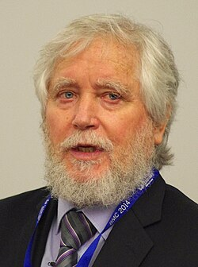
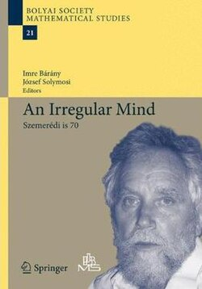

Endre Szemerédi | |
|---|---|
 Szemerédi in 2014 | |
| Born | August 21, 1940 |
| Education | Eötvös Loránd University (BS) Moscow State University (MS, PhD) |
| Awards | Abel Prize (2012) Széchenyi Prize (2012) Rolf Schock Prizes (2008) Leroy P. Steele Prize (2008) George Pólya Prize (1975) Alfréd Rényi Prize (1973) Member of the National Academy of Sciences |
| Scientific career | |
| Fields | Combinatorics Computer science Mathematics Theoretical computer science |
| Institutions | Rutgers University |
| Israel Gelfand | |
Doctoral students | Jaikumar Radhakrishnan Gábor N. Sárközy |
{kind=link}
Endre Szemerédi (Hungarian: [ˈɛndrɛ ˈsɛmɛreːdi]; born August 21, 1940) is a Hungarian-American[1] mathematician and computer scientist, working in the field of combinatorics and theoretical computer science. He is the State of New Jersey Professor of Computer Science Emeritus at Rutgers University, after having served in the position since 1986. He also holds a professor emeritus status at the Alfréd Rényi Institute of Mathematics of the Hungarian Academy of Sciences.
Szemerédi has won prizes in mathematics and science, including the Abel Prize in 2012. He has made a number of discoveries in combinatorics and computer science, including Szemerédi's theorem, the Szemerédi regularity lemma, the Erdős–Szemerédi theorem, the Hajnal–Szemerédi theorem and the Szemerédi–Trotter theorem.
Early life
Szemerédi was born in Budapest. Since his parents wished him to become a doctor, Szemerédi enrolled at a college of medicine, but he dropped out after six months (in an interview[2] he explained it: "I was not sure I could do work bearing such responsibility.").[3][4][5] He studied at the Faculty of Sciences of the Eötvös Loránd University in Budapest and received his PhD from Moscow State University. His adviser was Israel Gelfand.[6] This stemmed from a misspelling, as Szemerédi originally wanted to study with Alexander Gelfond.[3]
Academic career
Szemerédi has been the State of New Jersey Professor of computer science at Rutgers University since 1986. He has held visiting positions at Stanford University (1974), McGill University (1980), the University of South Carolina (1981–1983) and the University of Chicago (1985–1986).[7]
Work
Endre Szemerédi has published over 200 scientific articles in the fields of discrete mathematics, theoretical computer science, arithmetic combinatorics and discrete geometry. He is best known for his proof from 1975 of an old conjecture of Paul Erdős and Pál Turán: if a sequence of natural numbers has positive upper density then it contains arbitrarily long arithmetic progressions. This is now known as Szemerédi's theorem. One of the lemmas introduced in his proof is now known as the Szemerédi regularity lemma, which has become an important lemma in combinatorics, being used for instance in property testing for graphs and in the theory of graph limits.
He is also known for the Szemerédi–Trotter theorem in incidence geometry and the Hajnal–Szemerédi theorem and Ruzsa–Szemerédi problem in graph theory. Miklós Ajtai and Szemerédi proved the corners theorem, an important step toward higher-dimensional generalizations of the Szemerédi theorem. With Ajtai and János Komlós he proved the ct2/log t upper bound for the Ramsey number R(3,t), and constructed a sorting network of optimal depth. With Ajtai, Václav Chvátal, and Monroe M. Newborn, Szemerédi proved the famous crossing number inequality, that a graph with n vertices and m edges, where m > 4n has at least m3 / 64n2 crossings. With Paul Erdős, he proved the Erdős–Szemerédi theorem on the number of sums and products in a finite set. With Wolfgang Paul, Nick Pippenger, and William Trotter, he established a separation between nondeterministic linear time and deterministic linear time,[8] in the spirit of the infamous P versus NP problem.
Awards and honors
Szemerédi has won numerous awards and honors for his contribution to mathematics and computer science. A few of them are listed here:
- Honorary John von Neumann Professor (2021) [9]
- Grünwald Prize (1967)[10]
- Grünwald Prize (1968)[10]
- Rényi Prize (1973)[11]
- George Pólya Prize for Achievement in Applied Combinatorics (SIAM),[12] (1975)
- Prize of the Hungarian Academy of Sciences (1979)[10]
- State of New Jersey Professorship (1986)[13]
- The Leroy P. Steele Prize for Seminal Contribution to Research (AMS),[14] (2008)
- The Rolf Schock Prize in Mathematics for deep and pioneering work from 1975 on arithmetic progressions in subsets of the integers (2008)[15]
- The Széchenyi Prize of the Hungarian Republic for his many fundamental contributions to mathematics and computer science (2012)[16]
- The Abel Prize for his fundamental contributions to discrete mathematics and theoretical computer science (2012)[17]
- Hungarian Order of Saint Stephen[18](2020)
Szemerédi is a corresponding member (1982), and member (1987) of the Hungarian Academy of Sciences and a member (2010) of the United States National Academy of Sciences.[19] He was elected to the Academia Europaea in 2022.[16] He is also a member of the Institute for Advanced Study in Princeton, New Jersey and a permanent research fellow at the Alfréd Rényi Institute of Mathematics in Budapest. He was the Fairchild Distinguished Scholar at the California Institute of Technology in 1987–88. He is an honorary doctor[20] of Charles University in Prague. He was the lecturer in the Forty-Seventh Annual DeLong Lecture Series[21] at the University of Colorado. He is also a recipient of the Aisenstadt Chair at CRM,[22] University of Montreal. In 2008 he was the Eisenbud Professor at the Mathematical Sciences Research Institute in Berkeley, California.
In 2012, Szemerédi was awarded the Abel Prize "for his fundamental contributions to discrete mathematics and theoretical computer science, and in recognition of the profound and lasting impact of these contributions on additive number theory and ergodic theory"[23] The Abel Prize citation also credited Szemerédi with bringing combinatorics to the centre-stage of mathematics and noted his place in the tradition of Hungarian mathematicians such as George Pólya who emphasized a problem-solving approach to mathematics.[24] Szemerédi reacted to the announcement by saying that "It is not my own personal achievement, but recognition for this field of mathematics and Hungarian mathematicians," that gave him the most pleasure.[25]
Conferences
{kind=link}

On August 2–7, 2010, the Alfréd Rényi Institute of Mathematics and the János Bolyai Mathematical Society organized a conference in honor of the 70th birthday of Endre Szemerédi.[26]
Prior to the conference a volume of the Bolyai Society Mathematical Studies Series, An Irregular Mind, a collection of papers edited by Imre Bárány and József Solymosi, was published to celebrate Szemerédi's achievements on the occasion of his 70th birthday.[27] Another conference devoted to celebrating Szemerédi's work is the Third Abel Conference: A Mathematical Celebration of Endre Szemerédi.[28]
Personal life
Szemerédi is married to Anna Kepes; they have five children, Andrea, Anita, Peter, Kati, and Zsuzsi.[21][29]
References
- ^ "Magyar tudós kapta a matematika Nobel-díját" (in Hungarian). Népszava. March 21, 2012. Archived from the original on June 10, 2012. Retrieved April 19, 2012.
- ^ By Gabor Stockert
- ^ a b Raussen, Martin; Skau, Christian (2013), "Interview with Endre Szemerédi" (PDF), Notices of the American Mathematical Society, 60 (2): 221–231, doi:10.1090/noti948
- ^ "Endre Szemerédi › Heidelberg Laureate Forum". Archived from the original on September 25, 2013.
- ^ Sunita Chand; Ramesh Chandra Parida . Science Reporter, February 2013, p. 17
- ^ Endre Szemerédi at the Mathematics Genealogy Project
- ^ Holden, Helge; Piene, Ragni (August 2013). "Curriculum Vitae for Endre Szemerédi". The Abel Prize 2008-2012. Springer Berlin Heidelberg. pp. 507–508. doi:10.1007/978-3-642-39449-2_27. ISBN 9783642394492.
- ^ Wolfgang J. Paul; Nick Pippenger; Endre Szemerédi; William T. Trotter (1983). On determinism versus non-determinism and related problems. Annual Symposium on Foundations of Computer Science.
- ^ Recipients are listed on Budapest University of Technology and Economics website: "John von Neumann Professors". Budapest University of Technology and Economics. Archived from the original on September 12, 2022. Retrieved September 12, 2022.
- ^ a b c "2012: Endre Szemerédi Biography" (PDF). Retrieved December 26, 2023.
- ^ "Endre Szemerédi". Rényi. Retrieved December 26, 2023.
- ^ "George Pólya Prize in Applied Combinatorics". SIAM. May 26, 2017. Retrieved August 21, 2022.
- ^ Szemeredi, Endre (August 21, 2022). "Szemeredi, Endre". Home. Retrieved August 21, 2022.
- ^ "Browse Prizes and Awards". American Mathematical Society. November 26, 2018. Retrieved August 21, 2022.
- ^ Major US Maths Prize Given to HAS Full Member[link removed], Hungarian Academy of Sciences, January 9, 2008.
- ^ a b "Endre Szemerédi", Members, Academia Europaea, retrieved March 31, 2024
- ^ "2012: Endre Szemerédi". The Abel Prize. August 21, 2022. Retrieved August 21, 2022.
- ^ "Óbudai Egyetem: Tehetség. Siker. Közösség". ÓU. September 16, 2020. Retrieved August 21, 2022.
- ^ "Endre Szemerédi". Member directory. National Academy of Sciences. Retrieved March 31, 2024.
- ^ "Doctor honoris causa Endre Szemerédi". June 15–16, 2010.
- ^ a b DeLong Lecture Series. Math.colorado.edu. Retrieved on March 22, 2012.
- ^ Aisenstadt Chair Recipients. Crm.umontreal.ca. Retrieved on March 22, 2012.
- ^ "Hungarian-American Endre Szemerédi named Abel Prize winner". The Norwegian Academy of Science and Letters. Archived from the original on August 30, 2012. Retrieved March 21, 2012.
- ^ Ramachandran, R. (March 22, 2012). "Hungarian mathematician Endre Szemerédi gets 2012 Abel Prize". The Hindu. Retrieved March 22, 2012.
- ^ Ellis-Nutt, Amy (March 22, 2012). "Rutgers math professor's discovery earns prestigious award, $1M prize". NJ.com. Retrieved March 22, 2012.
- ^ Szemerédi is 70. Renyi.hu. Retrieved on March 22, 2012.
- ^ Bárány, Imre; Solymosi, József; Sági, Gábor (2010). An Irregular Mind: Szemerédi is 70. Bolyai Society Mathematical Studies. Vol. 21. Springer Berlin Heidelberg. doi:10.1007/978-3-642-14444-8. ISBN 978-3-642-14443-1.
- ^ Third Abel Conference: A Mathematical Celebration of Endre Szemerédi
- ^ "2012 Endre Szemeredi". The Abel Prize 2008–2012. Berlin, Heidelberg: Springer Berlin Heidelberg. August 9, 2013. p. 451. doi:10.1007/978-3-642-39449-2. ISBN 978-3-642-39448-5. ISSN 2661-829X.
External links
- Personal Homepage at the Alfréd Rényi Institute of Mathematics
- 6,000,000 and Abel Prize – Numberphile
- Interview by Gabor Stockert (translated from Hungarian by Zsuzsanna Dancso)